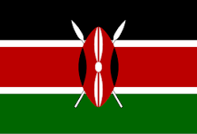

Joseph Ochieng Odongo
About Me
Hello! My name is Joseph Ochieng Odongo, and I am excited to be part of the WDD 131-Dynamic Web Fundamentals course. I have a passion for web development and look forward to enhancing my skills in this field. In my free time, I enjoy exploring new technologies, coding, and contributing to open-source projects. I am eager to learn and collaborate with fellow students throughout this course.
My Country
My country is Kenya, located in East Africa. Kenya is known for its stunning landscapes, diverse wildlife, and rich cultural heritage. The country boasts beautiful savannas, majestic mountains like Mount Kenya, and the iconic Great Rift Valley. Kenya is also famous for its national parks and reserves, such as the Maasai Mara, where visitors can witness the incredible annual migration of wildebeest and zebras. The people of Kenya are known for their warmth and hospitality, making it a wonderful destination for travelers.
